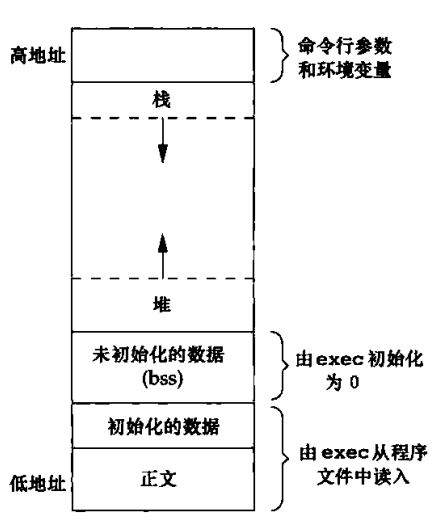

2017-01-03
进程环境
C语言总是从main函数开始执行。main函数的原型是：
int main（int argc ， char ×argv[1])
其中 ，argc 是命令行参数的数目，argv是指向参数的各个指针所构成的数组。
进程终止
五中正常的终止：
（1）从main返回
（2）调用exit
（3）调用_exit 或 _Exit;
(4) 最后一个线程从其启动历程返回
(5) 从最后一个线程调用pthread_exit
异常终止：
（6）滴啊用abort
（7）接到一个信号
（8）最后一个线程对取消请求做出响应
exit 函数总是执行一个标准I/O库的清理关闭操作。对于所有打开流调用fclose函数。这造成输出缓冲中的所有数据都被冲洗（写到文件上）。
函数atexit
按照ISOC的规定，一个进程可以登记多个至32个函数，，这些函数将由exit自动调用。我们称这些函数为终止处理程序，并调用atexit函数来登记这些函数。
其中，atexit的参数是一个函数的地址，当调用此函数的时候，无需向它传递任何参数，也不期望它返回一个值，exit调用这些函数的顺序与它们登记的顺序相反。同一个函数如若登记多次，也会被调用多次。
命令行参数
当执行一个程序是，调用exec的进程可将命令行参数传递给该程序。
环境表
每个程序都接受到一张环境表。与参数表一样，环境表也是一个字符指针数组，其中每个指针包括一个以null结束的C字符串地址。全局变了environ则包含了该指针的地址。
C程序的存储空间布局
正文段。这是由CPU执行的机器指令部分。通常，正文段是可以共享，所以即使是频繁执行的程序在存储器中也只需要有一个副本，另外，正文段常常是只读的，以防止程序由于意外而修改其指令。
初始化数据段。通常将此段称为数据段，它包含了程序中需要明确地赋初值的变量
未初始化数据段。通常将此段称为bss段，这一名称来源于早期汇编程序的一个操作符，意思是“由符号开始的块”，在程序开始执行之前，内核将此段中数据初始化为0或空指针。
栈。自动变量以及每次函数调用时所需保存的信息都存放在此段中。
堆。通常在堆中进行动态存储分配。由于历史上形成的惯例，堆位于初始化数据段和栈之间。

共享库
共享库使得可执行文件中不再需要包含公用的库函数，而只需要在所有进程都可引用的存储区中保存这种库例程的一个副本。程序第一次执行或者第一次调用某个函数库时，用动态链接方法将程序与共享库函数相连接。
存储空间分配
ISOC说明了3个用于存储空间动态分配的函数。
（1）malloc,分配指定字节数的存储区。此存储区中的初始值不确定。
（2）calloc，为指定数量指定长度的对象分配存储空间。该空间中的每一位（bit）都初始化为0
（3）realloc,增加或减少以前分配区的长度。当增加长度时，可能需将以前分配的内容移到另一个足够大的区域，以便在尾端提供增加的存储区，二新曾区域的初始值则不确定。
如若一个进程调用mallco函数，但却忘记调用free函数，那么该进程占用的存储空间就会连续增加，这被称为泄漏。
替代的存储空间分配程序
libmalloc，vmalloc，quick-fit，jemalloc，TCMalloc，alloca
环境变量
3个函数的操作
putenv 取形式为name=value的字符串，将其放到环境表中。如果name已经存在，则先删除其原来的定义。
setenv将name设置为value.如果在环境中name已经存在，那么
（a）若rewrite非0，则首先删除其现有的定义；
（b）若rewrite为0，则不删除其现有定义（name不设置新的value，而且也不出错）。
unsetenv 删除name的定义。即使不存在这种定义也不算出错。
函数setjmp和longjmp
在C中，goto语句是不能跨越函数的，而执行这种类型跳转功能的是函数setjmp和longjmp.这两个函数对于处理发生在很深层嵌套函数调用中的出错情况是非常有用的。